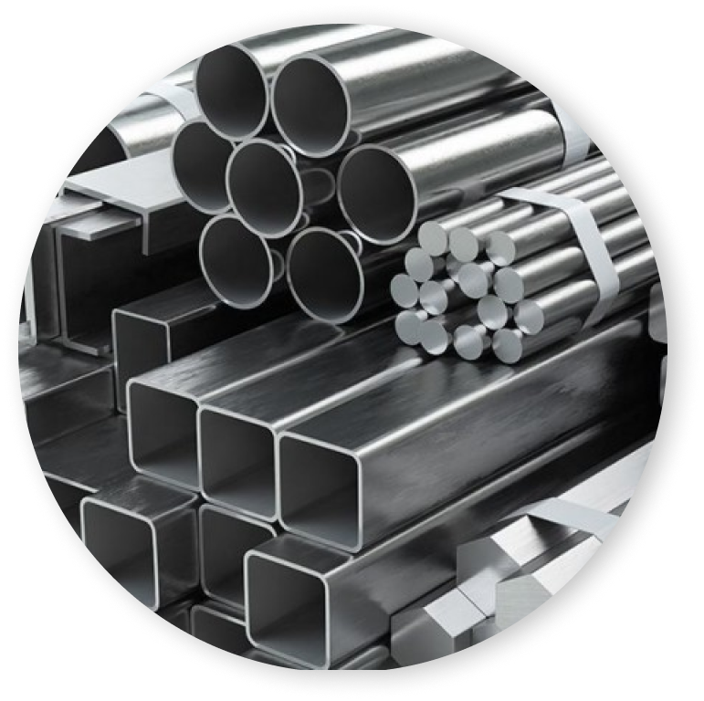

Найкращі роботи
з металу
Надаємо різноманітні види послуг по обробці металу якості, якої ви
заслуговуєте
Замовити

Плазмове нарізання металу
Плазмова нарізання – один з найбільш сучасних та високотехнологічних методів металообробки, якому притаманні високі показники точності та широкий спектр можливостей.
Зварювальні роботи
Сварка – технологический процесс, подразумевающий соединение металлических поверхностей путем образования прочных межатомных связей. В основу метода положена технология нагрева и пластической деформации. В настоящее время сварка используется в тяжелой и легкой промышленности, строительстве, машиностроении и других отраслях. Сварочные работы заслужили широкую популярность благодаря доступности услуги и высокому результату – соединение выходит прочным и аккуратным.
Виготовлення виробів із металу під ключ
Виготовлення виробів з металу – один із напрямків роботи компанії «ЖМЗ». Ми виготовляємо будь-які деталі на замовлення за кресленнями замовника. Пропонуємо вигідну вартість одиниці чи тиражу продукції з листового металу. У процесі виробництва використовуємо передові технології металообробки: лазерний розкрій, штампування, прецизійне згинання, аргонне зварювання і т.д. Завжди гарантуємо вигідну ціну та високу якість!
Гравірування та маркування металу
Лазерне гравіювання металу – процес нанесення графічних зображень на поверхню металевих виробів. Тонкий лазерний промінь дозволяє зосередити колосальну кількість енергії в одній точці, щоб випарувати верхній шар металу, не вдаючись до механічних методів. Ключова перевага технології – високий рівень можливості регулювання інтенсивності обробки, завдяки чому можливе як легке поверхневе маркування, так і глибше гравіювання. Характерні риси – висока роздільна здатність, деталізація та ювелірна точність нанесення. Незаперечна перевага – зображення, нанесені лазером, відрізняються високою стійкістю, видалити їх без значного пошкодження поверхні готової продукції неможливо. Технологія широко застосовується в промисловості для маркування, брендування, штрихкодування та декорування готової продукції.
Виправлення дроту
Розбухтування (правка дроту) – процес, що дозволяє розмотувати бухти з металопрокатом, випрямляти його і нарізати на відрізки заданої довжини. Стандартним варіантом форми випуску гарячекатаного металопрокату є моток та бухта.
Холодне штампування
Холодне штампування – один із методів металообробки, що використовується для виготовлення деталей з листового металу (оцинкованої сталі, міді, алюмінію, латуні) за допомогою тиску без нагрівання вихідної заготовки. Технологія має на увазі чітку послідовність операцій у виробничому циклі з обов'язковим використанням штампів. Невід'ємною частиною штампування є зміцнення, що досягається шляхом зменшення пластичності металу.
Полірування нержавіючої сталі
Полірування нержавіючої сталі – фінішний етап виробництва різних виробів з металу. Для надання виробу дзеркального блиску та усунення дрібних дефектів поверхні
Токарно-фрезерні роботи
Токарно-фрезерні роботи – один із основних процесів у металообробці. Висока точність, відповідність деталей кресленням досягається за допомогою використання спеціального обладнання. Економічна ефективність цього способу обробки металу не дозволяє йому втрачати популярність протягом десятків років. Основним різальним інструментом є фреза, що обертає з високою швидкістю, на яку подається деталь або заготівля. Завдяки цьому у потрібному місці знімається шар металу. На виході виходить деталь потрібної форми та розміру. Існує кілька видів фрезерування - фасонне, периферійне, кінцеве та торцеве, кожен з яких застосовується в залежності від поставлених завдань.
Виробництво металевих корпусів
Виробництво корпусу - це складний багатоступінчастий процес, який передбачає застосування різних методів на матеріал з метою отримання готового виробу, що відповідає параметрам і технології. Виготовлення корпусу для різних приладів, шасі для підсилювачів ламп здійснюється за допомогою комплексної металообробки. Кінцевий виріб є продуктом, який підходить для пристрою або приладу, виходячи з конструктивного виводу проектувальника. У корпусах можуть бути електронні прилади високої складності: радіоелектронна, комп'ютерна апаратура, тому до таких виробів висуваються особливі вимоги.
Виготовлення виробів з нержавіючої сталі
Одним із пріоритетних напрямків у сучасній металообробці є виготовлення виробів із нержавіючої сталі. Вони мають величезний попит у певних сферах виробництва, завдяки своїй надійності, практичності та довговічності.